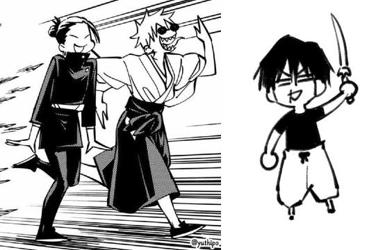
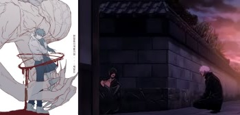

Life as a Geto Fan :D
By: ITOSHI RIN(Irin)
Yo I'm Irin or just call me Rin because most people can't say Irin somehow ;-;, but anyway as a geto
and a jjk fan and all anime it's fine and all nothing special about it, i read manga and watch anime cause
the episode/season isn't there yet so might as well read the original :p

The first time i watch jjk i was a bit violence and got yelled at so i lowerd the volume down lmao
and for the early episode's the character that i liked so far was Sukuna the main Villain in jjk.

And as the episode's continue there come's season 2 where there are 2 main character that is
Suguru Geto, and Satoru Gojo well mostly Gojo is the main, then the villain there was
Toji Fushiguro, i dont want to spolier them all so watch the anime yourself :p

But every anime has a movie of it jjk has it too its called "Jujutsu Kaisen Movie 0" where the main character
is Yuta Nakamoto and the main Villain is Suguru Geto, yes i know, how did Geto ended up to be the Villain in there
well it was at the jjk season 2 episode 3 you'll understand it soon,NOW back to the main when Yuta was little he liked a girl named Rika,
they made a promise ring that they'll get married when they're older but she ended up dead cause by hitting a car
but Yuta cant accept the fact she's dead (i dont know how to explain the part so ima skip) then skip to
when Yuta got into the Jujutsu highschool then SKIP TO THE EMOTIONAL BATTLE where yuta fight's against Geto then yuta won
Geto was defeated and gone to hide himself cause he was badly injured but Gojo found him in the end they talk a while
in the end Geto told Gojo to just end his life and so Gojo did and i dont know the rest

And im out

YOICHI TENKAI

FUKUMA MIZHUSHI